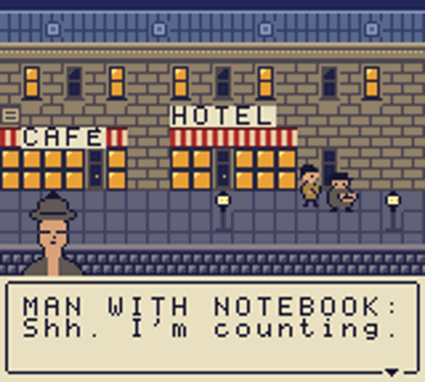
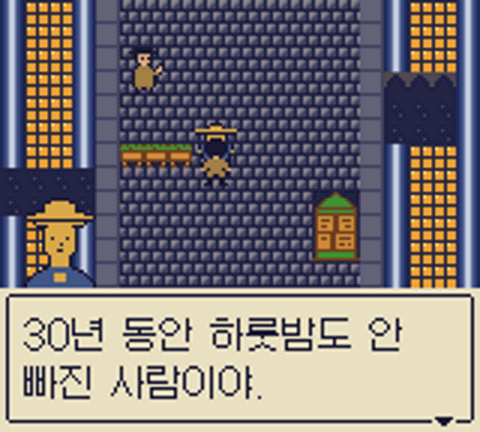
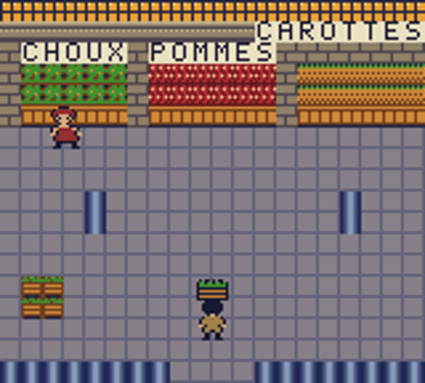
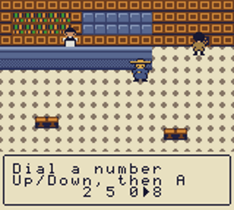
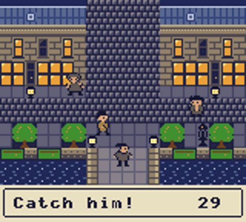
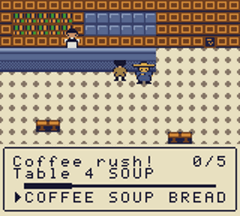
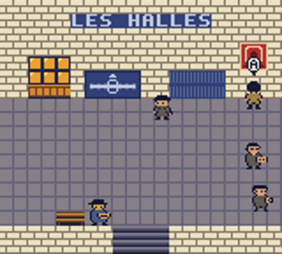
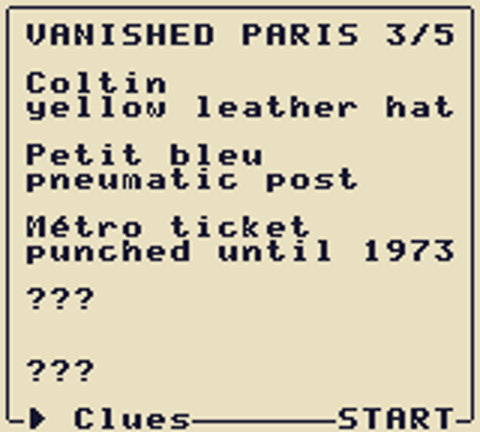

Projet personnel · Jeu vidéoPersonal project · Video game
Un jeu d'exploration original pour Game Boy Color. Paris, novembre 1967, avant l'aube : les Halles vont partir pour Rungis, et Fernand, fort des Halles depuis trente ans, n'est pas venu travailler. Le joueur enquête dans le quartier, parle aux gens du marché et réunit les indices dans un carnet. Pas de combat, pas de crime : le but est de montrer un Paris qui n'existe plus.
An original exploration game for the Game Boy Color. Paris, November 1967, before dawn: Les Halles market is about to move to Rungis, and Fernand, a market porter for thirty years, has not come to work. The player searches the area, talks to the market people and collects clues in a notebook. No combat, no crime: the aim is to show a Paris that no longer exists.
Six indices à trouver (un petit bleu du pneumatique, des appels au téléphone à jeton, le coltin et la plaque de Fernand…), un carnet qui indique toujours la prochaine étape, deux fins.
Six clues to find (a pneumatic-post letter, token-phone calls, Fernand's porter's hat and badge…), a notebook that always shows the next step, two endings.
Porter les caisses aux bons étals, servir au café, le jeu des gobelets, attraper les choux, poinçonner les tickets de métro, poursuivre un pickpocket sur le quai, composer des numéros sur le téléphone mural.
Carry crates to the right stalls, serve in the café, the cup game, catch the cabbages, punch métro tickets, chase a pickpocket along the quai, dial numbers on the wall telephone.
Un album d'objets d'époque, chacun avec un fait sourcé (le poinçonneur, disparu en 1973 ; le pneumatique, fermé en 1984). Des personnages inspirés de figures de l'époque, jamais nommés.
An album of period objects, each with a sourced fact (the ticket puncher, gone in 1973; the pneumatic post, closed in 1984). Characters inspired by figures of the time, never named.








Captures prises automatiquement par les tests dans l'émulateur PyBoy.
Screenshots captured automatically by the tests in the PyBoy emulator.
Le code C a été écrit avec Claude (assistant IA). Mon rôle : l'idée, l'histoire, la direction artistique et les choix de jeu, puis la relecture et les tests. Tout tient dans une ROM de 256 Ko, avec sauvegarde automatique sur la mémoire de la cartouche.
The C code was written with Claude (an AI assistant). My role: the idea, the story, the art direction and the game decisions, then review and testing. Everything fits in a 256 KB ROM, with automatic saving to the cartridge's battery memory.
Une partie complète jusqu'aux deux fins est rejouée automatiquement dans un émulateur, avec des tests de sauvegarde et d'affichage. Un document de recherche sépare les faits vérifiés, les reconstitutions et la fiction, avec leurs sources.
A full play-through to both endings is replayed automatically in an emulator, with save and display tests. A research document separates verified facts, reconstructions and fiction, with their sources.
Pas encore testé sur une vraie console. L'histoire et tous les personnages sont fictifs. © Jiwon.
Not yet tested on real hardware. The story and all characters are fiction. © Jiwon.